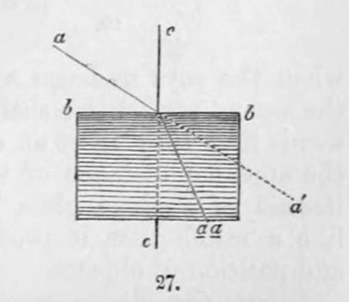
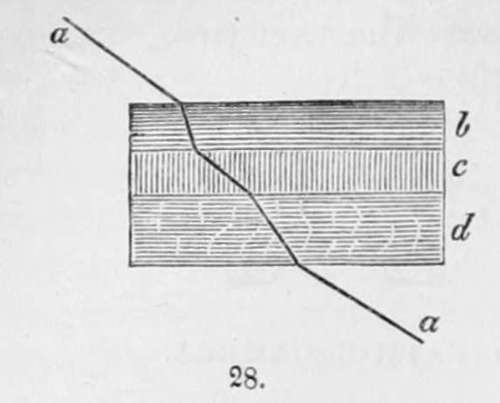
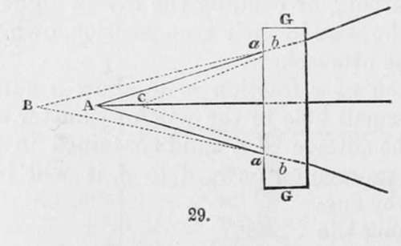
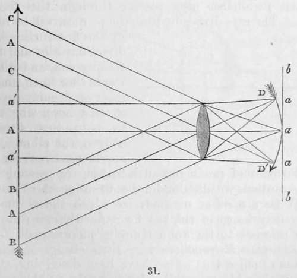
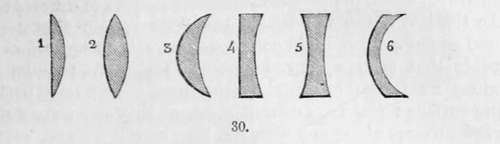
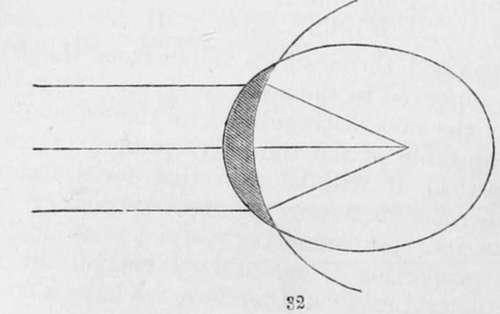

Chapter VII. On Lenses For The Photographic Camera
Description
This section is from the book "A Manual Of Photography", by Robert Hunt. Also available from Amazon: A Manual of Photography.
Chapter VII. On Lenses For The Photographic Camera
It is to the photographic artist, a matter of considerable moment that he understands the principles upon which his instruments are constructed. It has, therefore, been thought advisable to add a short chapter which should give a sufficiently popular explanation of the dioptrical phenomena with which we have especially to deal.
Upon the refractive power of the media employed, depends the perfection of the results we obtain; therefore, some of the phenomena of refraction, or breaking back, as the term implies, should be clearly understood.
A ray of light passing though a vacuum progresses in a perfectly straight line, and we should, if we looked at a brilliantly illuminated point—were it possible—under such conditions, see it in its time position, the numerous rays coming undisturbed directly to the eye. But all matter, however attenuated it may be, has the property of refracting, or bending the ray of light; consequently we do not see the stars in their true position, owing to the refractive power of the atmosphere.
The most simple illustration of refraction is to allow a sunbeam, a, passing through a small hole in the window-shutter of a dark room, to fall upon the surface of a fluid contained in a glass vessel, b b : instead of proceeding onward to á, it will be found to alter its course at the surface of the fluid, and pass along the line to a a. Every substance has different refractive powers in virtue of its physical constitution ; but a ray of light incident perpendicularly on a refracting medium, as the ray c, (Fig. 27) suffers no refraction. If we float, one upon the other fluids, b,c,d, having different powers of refraction we shall then see the relative phenomena exhibited by the bending of the ray a a, in passing through them (Fig. 28).
It will be evident that no great difficulty exists in measuring the refractive powers of different transparent bodies : and that hence we are enabled to tabulate those which have the highest and lowest refractive indices. A few of the most important are given in the following table :—
Air........................ | 1.000294 |
Water........................ | 1.336 |
Alcohol........................ | 1.372 |
Oil of Cloves........................ | 1.535 |
Crown glass........................ | 1.534 |
Plate glass........................ | 1.542 |
Flint glass........................ | 1.830 |
Do. containing much lead....... | 2.028 |
Diamond........................ | 2.439 |
This knowledge enables us to trace a ray of light through transparent bodies of any form, provided we can find the inclination of the incident ray to the surface, where it either enters or quits the body.
If parallel rays fall upon a plane surface g, of glass, they will retain their parallelism after passing through it as the ray a (Fig. 29). The rays diverging from the point a, will be refracted by the first surface into the directions b b, and by continuing a a, and b b, backwards, we shall find they meet at a point beyond a : so that supposing the eye to be placed within the body g, the point a would appear removed to b. But when the rays undergo a second refraction by passing out of the second surface, we shall find by continuing the lines backwards that they meet at c; therefore a plane glass diminishes the apparent distance of the point of the diverging rays. If, instead of a plane glass, we employ a piece equally curved, like a watch-glass, it produces very little change in the form and position of objects.
Lenses are glasses ground to different forms, their surfaces being segments of spheres, and it is in obedience to the refractory power of the surfaces so produced that their peculiarities belong. The adjoining figures represent the varieties.
1 is termed a plano-convex lens.
2 is a double convex lens.
3 is formed of parts of two circles of different diameters, and is called a meniscus lens, or concavo-convex.
4 is a plano-concave lens.
5 is a double concave lens. And:
6 is a concavo-convex lens, formed of parts of the inner surfaces of two dissimilar circles.
It is not necessary to examine the laws of refraction for all these forms; the phenomena will be fully understood by an examination of a few leading points. Whatever may be the form of a lens, the incident rays parallel to its axis pass through without suffering refraction, as a a a, a a a, Fig. 31.
All other rays must have a certain amount of obliquity, and these all consequently suffer refraction, as the rays á á. Now the rays b b, and the ray c c, are refracted, and meet at d d' ; the line b b represents the focal image produced of the body from which the light proceeds.
In the last figure the image produced by the lens is represented as curved : a little consideration will show that it is not possible that such a curved surface as that represented could produce an image of equal distinctness over every part of a plane surface : the rays cannot meet, as they are refracted from curved surfaces along any straight line, as f f f ; and supposing we receive on the surface of a lens a bright circular image, it will be brilliant and well defined around the centre, the light becoming fainter towards the edge, and at length passing into a cloudy halo, exhibiting the prismatic colours. This is called spherical aberration, and to it is due that want of distinctness which commonly is found around the edges of pictures taken in the camera obscura.
It is therefore important, in the selection of lenses, that we look for sharpness of definition over the whole of a perfectly flat field. To manufacture a lens which shall effect this, is a task of some difficulty ; but by attention to the two facts, that a lens, one surface of which is a section of an ellipse, and the other of a circle struck from the farthest of the two foci of that ellipse, as in Fig. 32, produces no aberration, much may be effected. A meniscus lens, therefore, with a convex surface, part of an ellipsoid, the focal distance of which coincides with its farther focus, and a concave surface, part of a sphere, whose centre is that focus, will meet all our requirements. The mechanical difficulties of producing such lenses are great, but they may, by cautious manipulation, be to a great extent overcome. There are other methods by which the aberration of sphericity may be corrected, but for a description of these the reader is referred to Sir John Herschel's Treatise on Light, in the Encyclopædia Metropolitana.

Continue to:
- prev: Chapter VI. On The Possibility Of Producing Photographs In Their Natural Colours
- Table of Contents
- next: On Lenses For The Photographic Camera. Part 2